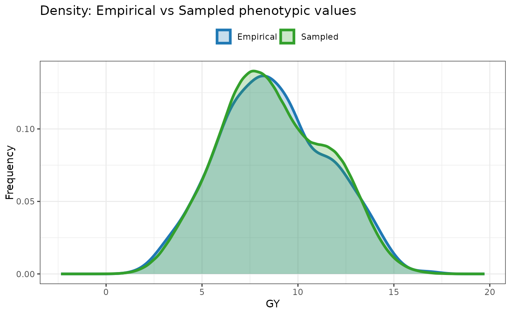
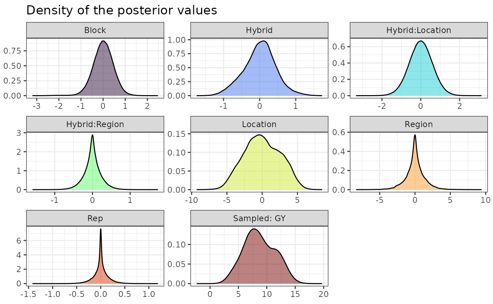
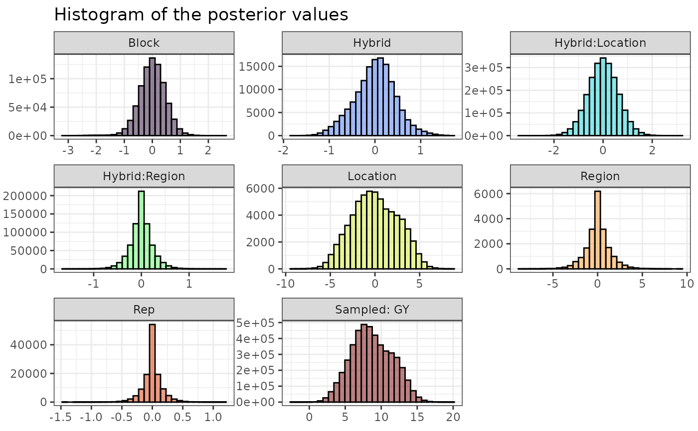
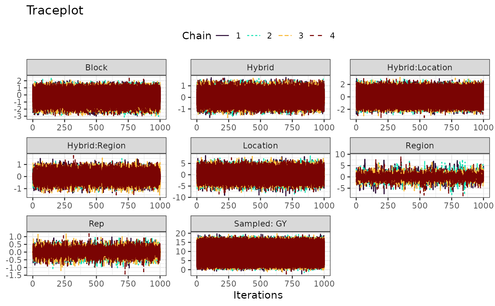

Build plots using the outputs stored in the extr object.
Usage
# S3 method for class 'extr'
plot(x, ..., category = "ppdensity")Arguments
- x
An object of class
extr.- ...
Passed to ggplot2::geom_histogram, when
category = histogram. Useful to change the number of bins.- category
A string indicating which plot to build. See options in the Details section.
Details
The available options are:
ppdensity: Density plots of the empirical and sampled data, useful to assess the model's convergence.density: Density plots of the model's effects.histogram: Histograms of the model's effects.traceplot: Trace plot showing the changes in the effects' values across iterations and chains.
Examples
# \donttest{
mod = bayes_met(data = maize,
gen = "Hybrid",
loc = "Location",
repl = c("Rep","Block"),
trait = "GY",
reg = "Region",
year = NULL,
res.het = TRUE,
iter = 2000, cores = 2, chain = 4)
#> 395.554 seconds (Sampling)
#> Chain 2: 665.22 seconds (Total)
#> Chain 2:
#> Warning: There were 104 transitions after warmup that exceeded the maximum treedepth. Increase max_treedepth above 10. See
#> https://mc-stan.org/misc/warnings.html#maximum-treedepth-exceeded
#> Warning: There were 2 chains where the estimated Bayesian Fraction of Missing Information was low. See
#> https://mc-stan.org/misc/warnings.html#bfmi-low
#> Warning: Examine the pairs() plot to diagnose sampling problems
#> Warning: The largest R-hat is 1.37, indicating chains have not mixed.
#> Running the chains for more iterations may help. See
#> https://mc-stan.org/misc/warnings.html#r-hat
#> Warning: Bulk Effective Samples Size (ESS) is too low, indicating posterior means and medians may be unreliable.
#> Running the chains for more iterations may help. See
#> https://mc-stan.org/misc/warnings.html#bulk-ess
#> Warning: Tail Effective Samples Size (ESS) is too low, indicating posterior variances and tail quantiles may be unreliable.
#> Running the chains for more iterations may help. See
#> https://mc-stan.org/misc/warnings.html#tail-ess
outs = extr_outs(model = mod,
probs = c(0.05, 0.95),
verbose = TRUE)
#> -> Posterior effects extracted
#> -> Variances extracted
#> -> Maximum posterior values extracted
#> -> Posterior predictive checks computed
#> 0 of 4000 iterations ended with a divergence.
#> 104 of 4000 iterations saturated the maximum tree depth of 10 (2.6%).
#> Try increasing 'max_treedepth' to avoid saturation.
#> E-BFMI indicated possible pathological behavior:
#> Chain 3: E-BFMI = 0.140
#> Chain 4: E-BFMI = 0.026
#> E-BFMI below 0.2 indicates you may need to reparameterize your model.
plot(outs, category = "ppdensity")

plot(outs, category = "density")

plot(outs, category = "histogram")
#> `stat_bin()` using `bins = 30`. Pick better value `binwidth`.

plot(outs, category = "traceplot")

# }